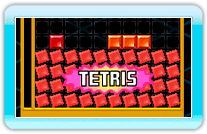
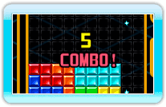

13 |
Tecniche |
 |
|
Usa le seguenti tecniche in Tetris Party per ottenere punti bonus e inviare diversi blocchi di penalità nel campo di gioco di un avversario.
I punti bonus vengono assegnati quando elimini 4 righe con il tetramino I. Questa è una delle strategie classiche di Tetris.
Vengono assegnati dei punti bonus per l'eliminazione di linee consecutive.
I bonus non vengono più assegnati quando non elimini righe consecutive.
 Ottieni dei punti bonus quando elimini tutti i blocchi del campo di gioco. Ottieni dei punti bonus quando elimini tutti i blocchi del campo di gioco. Questo bonus non viene assegnato se usi oggetti come "Calcia linea".
Con una successione di "TETRIS", "T-SPIN SINGLE" e "T-SPIN DOUBLE" guadagni punti bonus. Se la successione è interrotta da altre tecniche di eliminazione (ad esempio, un DOPPIO normale), il bonus non viene assegnato. |
||||||||||||||||||||||||||||||||||||||||||||||||||||||||||||


 |
 |
 |